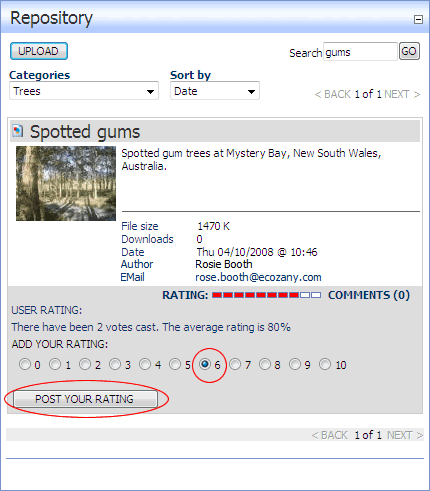

or Dashes
or Dashes  . This displays the User Rating panel below the item. Note: If you are not authorized to add rating the User Rating panel is not displayed.
. This displays the User Rating panel below the item. Note: If you are not authorized to add rating the User Rating panel is not displayed. How to rate an item in the Repository module. Note: Rating of items may not be available to all users.
or Dashes . This displays the User Rating panel below the item. Note: If you are not authorized to add rating the User Rating panel is not displayed.

Posting your Rating